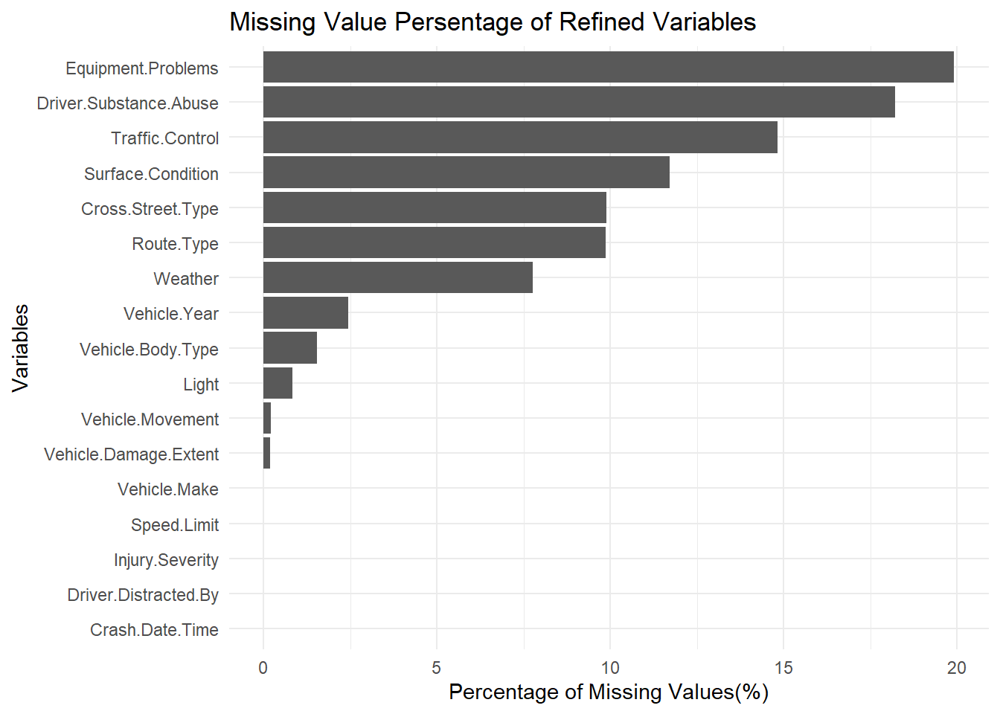

For the proposed project, we plan to utilize a dataset called Crash Reporting - Drivers Data from DATA.GOV, available at https://catalog.data.gov/dataset/crash-reporting-drivers-data. This dataset is published and maintained by data.montgomerycountymd.gov and is updated weekly for analysis.
The data collection process involves several local law enforcement agencies within Montgomery County, including the Montgomery County Police, Gaithersburg Police, Rockville Police, and the Maryland-National Capital Park Police. These agencies contribute to the Automated Crash Reporting System (ACRS) of the Maryland State Police, which compiles the data.
The dataset comprises 169,760 rows and 43 columns. For our project, we have chosen the CSV format of the dataset. Meanwhile, other formats of the data such as RDF, JSON, XML, and a landing page format are also available on the source website. One significant aspect about the data is that it includes comprehensive details of vehicle conditions and road conditions in the reported traffic collisions.
However, a known issue with the dataset is that it contains both verified and unverified collision data. Such discrepancies can lead to biases or inaccuracies in analyzing and interpreting different variables. Another potential issue of the data after examination was the mismatch between the ACRS Report Type and the Injury Severity columns. For example, an incident was classified as Injury Crash in the ACRS Report Type but in the Injury Severity it is marked as NO APPARENT INJURY. Such mismatches lead us to the decision of using Injury Severity as it provides more specific and accurate information about the car crash. Also, in Vehicle Year column, there are abnormal data value such as 0, 9999, 2024. These are likely to be incorrect values due to manual input or missing data, so we choose to treat those abnormal data as missing value.
To import the dataset into an R environment for analysis, we will use the following R script:
Code
data <-read.csv("data/Crash_Reporting_-_Drivers_Data.csv", header =TRUE, sep=",",na.strings=c("","N/A"))head(data)
Report.Number Local.Case.Number Agency.Name
1 MCP3040003N 190026050 Montgomery County Police
2 MCP1307000K 190024786 Montgomery County Police
3 MCP2846008X 230034260 Montgomery County Police
4 MCP32610017 230034668 Montgomery County Police
5 EJ78520081 230033429 Gaithersburg Police Depar
6 MCP3163005L 230035071 Montgomery County Police
ACRS.Report.Type Crash.Date.Time Route.Type
1 Property Damage Crash 05/31/2019 03:00:00 PM <NA>
2 Property Damage Crash 05/24/2019 05:00:00 PM <NA>
3 Property Damage Crash 07/17/2023 10:45:00 AM County
4 Property Damage Crash 07/20/2023 11:40:00 PM Maryland (State)
5 Property Damage Crash 07/13/2023 05:40:00 PM Municipality
6 Property Damage Crash 07/23/2023 03:55:00 PM Maryland (State)
Road.Name Cross.Street.Type Cross.Street.Name
1 <NA> <NA> <NA>
2 <NA> <NA> <NA>
3 SELFRIDGE RD County RANDOLPH RD
4 MUNCASTER MILL RD County SHADY GROVE RD
5 PERRY PKWY Unknown ENT TO SHOPPING CENTER
6 ROCKVILLE PIKE County GROSVENOR LA
Off.Road.Description Municipality Related.Non.Motorist
1 PARKING LOT OF 3215 SPARTAN RD <NA> <NA>
2 PARKING LOT <NA> <NA>
3 <NA> <NA> <NA>
4 <NA> <NA> <NA>
5 <NA> <NA> <NA>
6 <NA> <NA> <NA>
Collision.Type Weather Surface.Condition Light Traffic.Control
1 OTHER CLEAR <NA> DAYLIGHT <NA>
2 <NA> CLEAR <NA> DAYLIGHT <NA>
3 OTHER CLEAR DRY DARK LIGHTS ON TRAFFIC SIGNAL
4 OTHER <NA> DRY DARK LIGHTS ON TRAFFIC SIGNAL
5 SAME DIR REAR END <NA> DRY DAYLIGHT NO CONTROLS
6 SAME DIR REAR END CLEAR DRY DAYLIGHT TRAFFIC SIGNAL
Driver.Substance.Abuse Non.Motorist.Substance.Abuse
1 UNKNOWN <NA>
2 <NA> <NA>
3 UNKNOWN <NA>
4 <NA> <NA>
5 <NA> <NA>
6 <NA> <NA>
Person.ID Driver.At.Fault Injury.Severity
1 DE2A24CD-7919-4F8D-BABF-5B75CE12D21E Yes NO APPARENT INJURY
2 6208FA7B-5DC4-4B54-AD60-0C06DFE2AE81 Yes NO APPARENT INJURY
3 9ACC5A7E-47A1-438F-BF0E-40B0A8632055 Yes NO APPARENT INJURY
4 E611A3F8-5F7D-465B-8DE0-3814027998F1 No NO APPARENT INJURY
5 3C7F6951-1701-44DC-9824-88DF4E32352E Yes NO APPARENT INJURY
6 A06FADE9-E491-4584-BF35-6206D3D4CE09 No NO APPARENT INJURY
Circumstance Driver.Distracted.By Drivers.License.State
1 <NA> UNKNOWN <NA>
2 <NA> NOT DISTRACTED XX
3 <NA> INATTENTIVE OR LOST IN THOUGHT MD
4 <NA> NOT DISTRACTED MD
5 <NA> LOOKED BUT DID NOT SEE MD
6 <NA> NOT DISTRACTED MD
Vehicle.ID Vehicle.Damage.Extent
1 165AD539-A8C8-4004-AF73-B7DCAAA8B3CC SUPERFICIAL
2 10239493-D667-42F9-A3D2-820FE184CB6C FUNCTIONAL
3 8B61B8E0-5473-4C78-A654-6029684ABD03 SUPERFICIAL
4 1A592482-AF1F-49CE-8554-77EF7C55966B SUPERFICIAL
5 C2EF337E-5881-48ED-9B06-36D0BE00557C SUPERFICIAL
6 6FA5AA9A-7D9D-4CD7-A600-8F16E5E13455 DISABLING
Vehicle.First.Impact.Location Vehicle.Second.Impact.Location
1 ONE OCLOCK ONE OCLOCK
2 ONE OCLOCK ONE OCLOCK
3 SEVEN OCLOCK SEVEN OCLOCK
4 ELEVEN OCLOCK ELEVEN OCLOCK
5 TWELVE OCLOCK TWELVE OCLOCK
6 SIX OCLOCK SIX OCLOCK
Vehicle.Body.Type Vehicle.Movement
1 PASSENGER CAR PARKING
2 PASSENGER CAR PARKING
3 PASSENGER CAR MOVING CONSTANT SPEED
4 PASSENGER CAR MAKING RIGHT TURN
5 MEDIUM/HEAVY TRUCKS 3 AXLES (OVER 10,000LBS (4,536KG)) MOVING CONSTANT SPEED
6 PASSENGER CAR SLOWING OR STOPPING
Vehicle.Continuing.Dir Vehicle.Going.Dir Speed.Limit Driverless.Vehicle
1 North North 15 No
2 Unknown Unknown 0 No
3 East East 35 No
4 South East 45 No
5 Unknown Unknown 25 No
6 South South 35 No
Parked.Vehicle Vehicle.Year Vehicle.Make Vehicle.Model Equipment.Problems
1 No 2004 HONDA TK UNKNOWN
2 No 0 UNK UNK <NA>
3 No 2003 FORD TK NO MISUSE
4 No 2023 TOYT CP NO MISUSE
5 No 2001 KENWORTH TRUCK <NA>
6 No 2014 HONDA CIVIC <NA>
Latitude Longitude Location
1 39.15004 -77.06309 (39.15004368, -77.06308884)
2 39.19905 -77.25074 (39.19904667, -77.25074333)
3 39.05459 -77.08597 (39.05458848, -77.08597423)
4 39.14872 -77.14711 (39.14872076, -77.14711061)
5 39.14909 -77.21073 (39.14908542, -77.21073135)
6 39.02335 -77.10302 (39.02334833, -77.10301733)
This script reads the CSV file into a data frame, making it ready for subsequent data processing and analysis. The use of head(data) will initially display the first few rows of the dataset, providing a quick overview of the data structure and content.
2.2 Research plan
As mentioned in the Introduction Chapter, we plan to investigate five questions in our study
Accident Hotspots: To identify the locations with the highest frequency of traffic collisions, we will utilize ‘Route Type’ and ‘Cross-Street Type’ variables to pinpoint specific areas or route types where accidents occur more frequently.
Time Patterns: The ‘Crash Date/Time’ variable is key for understanding the temporal patterns of accidents. This variable contains detailed information of the time, date, and year when the accident occurred.
Collision Causes: We plan to use variables such as ‘Driver Substance Abuse’, ‘Driver Distracted By’, ‘Vehicle Movement’, and ‘Equipment Problems’ to understand the common causes of collisions and the severity of the collisions.
Impact of Weather and Road Conditions: The influence of external conditions on traffic accidents can be assessed using variables like ‘Weather’, ‘Surface Condition’, ‘Light’, ‘Traffic Control’, and ‘Speed Limit’. We could associate these factors with the injury severity and vehicle damage extent.
Vehicle Types Involved: To determine if certain types of vehicles are more frequently involved in accidents, the ‘Vehicle Body Type’, ‘Vehicle Year’, and ‘Vehicle Make’ variables. These variables could also assist us in understanding the vehicle damage extent.
A structured table of the resarch plan is shown as below:
We will initially refine our dataset to include only the variables of interest. To analyze and interpret missing values, we will employ bar charts to visualize the percentage of missing data and use the ‘plot missing’ function to identify any discernible patterns in the missing values.
Code
library(ggplot2)library(dplyr)
Attaching package: 'dplyr'
The following objects are masked from 'package:stats':
filter, lag
The following objects are masked from 'package:base':
intersect, setdiff, setequal, union
Code
library(redav)# refine datasetcolumns =c("Crash.Date.Time", "Route.Type", "Cross.Street.Type","Weather", "Surface.Condition", "Light", "Traffic.Control", "Driver.Substance.Abuse", "Injury.Severity", "Driver.Distracted.By", "Vehicle.Damage.Extent", "Vehicle.Body.Type", "Vehicle.Movement", "Speed.Limit", "Vehicle.Year", "Vehicle.Make", "Equipment.Problems")data_refined = data[columns]# make abnormal data in 'Vehicle.Year' to NAsdata_refined <- data_refined %>%mutate(Vehicle.Year =if_else(Vehicle.Year <1900| Vehicle.Year >2023, NA_real_, Vehicle.Year))# analysis missing valuemissing_value <-colSums(is.na(data_refined))/dim(data_refined)[1]*100|>sort(decreasing =TRUE)missing_data_df <-data.frame(Column =names(missing_value),NAs = missing_value)# plot percentage of missing valueggplot(missing_data_df, aes(x =reorder(Column, NAs), y = NAs)) +geom_bar(stat ="identity") +theme_minimal() +labs(x ="Variables", y ="Percentage of Missing Values(%)", title ="Persentage of Missing Values of Variables") +coord_flip()
From the bar chart, it is evident that all the variables of interest have less than 20% missing values. Notably, Equipment.Problems and Driver.Substance.Abuse exhibit relatively higher percentages of missing values, each exceeding 15%. The majority of the variables demonstrate relatively complete data values.
To enhance our visual analysis of the missing value patterns, we have selected a random subset of 1,000 rows and used numerical value to map the name of variables. This sample will help us more clearly discern any underlying trends in the missing value.
Scale for y is already present.
Adding another scale for y, which will replace the existing scale.
Scale for y is already present.
Adding another scale for y, which will replace the existing scale.

From the graph, we can make following observation: Around 50% of the sample data has complete data value for all selected variable; Around 5% of the sample data only missed Equipment.Problems; Around 5% of the sample data only missed Driver.Substance.Abuse; Around 3% of the sample data only missed Traffic.Control; Around 3% of the sample data only missed Weather; Around 3% of the sample data missed both Equipment.Problems and Driver.Substance.Abuse; Around 2% of the sample data missed Route.Type, Cross.Street.Type and Surface.Condition; There are no other clear patterns of missing data.
This pattern is reasonable since Equipment.Problems, Driver.Substance.Abuse and Traffic.Control are variables that has the most missing value. Route.Type, Cross.Street.Type and Surface.Condition are likely to missed together since those are all road condition information.